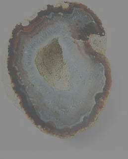

Listen to 'Geode' in English

III GEODE
Que la ronde à la chute asservisse l'écorce,
Je suis creuset du mot d'où sort le seul vivant
Le cèdre qui s'abat est la preuve du vent
Un cristal invaincu muselle souffle et force.
Ame du tourbillon qui compose mon torse,
Mes heures dispersant comme la graine au van
Je recèle la pierre et le rythme savant
Qui d'un astre levant sont la mine et l'amorce.
Spirale engloutissant les bornes et les ans
Je serai le mangeur du monstre qui m'enlève-
Thésée insoucieux du secret qui l'attend-
(Sur champ d'éternité pousse la chanson brève)
Et je retrouverai quand sonnera la trêve
Mon centre inviolé que déserte le temps.
5 février 1990
III GEODE
The woodcutters' round dance may the barked tree enthrall!
Crucible, I beget the sole word apt to last.
Who could deny the wind when oaks are made to fall?
But a flawless crystal overcomes strength and blast.
Spirit of the whirlwind that composes my chest,
I just scatter my hours like grains that I winnow,
Concealing in myself gem and skilful tempo,
For shooting stars, powder and button to be pressed.
As a spinning spiral engulfing years and miles,
The fiend abducting me I shall at last devour!
- Theseus disdainful of the lurking monster -.
(In everlasting fields thrive the shortlasting strains)
And I shall find again, once the truce is proclaimed,
To my inviolate core out of reach for time.
February 5th 1990
Copyright Michel Galiana 01.04.2006 (c) (r) All rights reserved
Transl. Christian Souchon 01.04.2006 (c) (r) All rights reserved
|
Une géode est une cavité rocheuse tapissée de cristaux (silicates ou carbonates) à faces planes. Selon le commentaire ci-après, cette métaphore s'applique au poème. On peut penser qu'elle vise aussi le poète lui-même qui s'exprime ici à la première personne et souhaiter, comme lui, que son oeuvre cachée triomphera du temps. Commentaire de Sidi J. MAHTROW, poète américain: "Ce qui fait la beauté des traductions n'est pas tant ce qu'elles semblent dire, mais le fait qu'elles expriment un effort pour s'introduire dans l'univers mental d'un autre homme. Il en va ainsi de ce poème. Le fait qu'on ignore la langue d'origine procure un plaisir d'autant plus intense. Ce texte est une très bonne comparaison allégorique entre le secret que chaque poème renferme et le précieux cristal caché au coeur de la géode." |
A geode is a rock cavity lined with crystals (silicates or carbonates) with flat faces. According to the commentary below, this metaphor applies to the poem. We can think that it also hints at the poet who expresses himself here in the first person, and wish, as he does, that his hidden work will triumph over time. Comment of the American poet, Sidi J. MAHTROW,: "One of the beauties of translations is not what they seem to say, but what may be there for one who tries to see into the thoughts of another. Such it is with this poem. Lack of understanding of the language only makes the pleasure more intense. This is quite a good allegory between the secret held within a poem and the jewel (crystals) of a geode. " |
Listen to 'Geode' in English